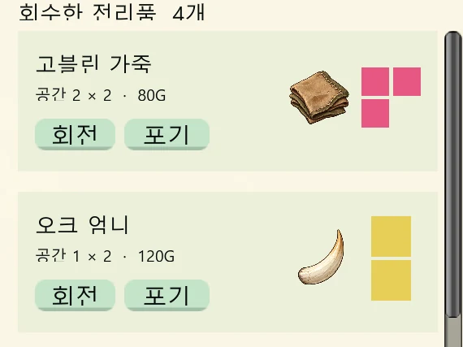

CASE 01 게임 규칙
전리품의 모양을 선택의 일부로 만들기
- 목표와 판단
- 가방은 칸 수만 채우는 목록이 아닙니다. 서로 다른 모양의 전리품을 어디에 놓고 무엇을 포기할지 결정하게 하는 것이 목표였습니다.
- 구현
- 아이템이 실제로 차지하는 셀로 경계와 충돌을 검사합니다. 회전 미리보기와 최종 판정을 분리하고, 배치·가격·가방 크기를 이어하기에 필요한 상태로 저장합니다.
- 확인한 근거
- 회전 전후 배치 화면과 점유 셀 판정 코드를 함께 확인할 수 있습니다.
